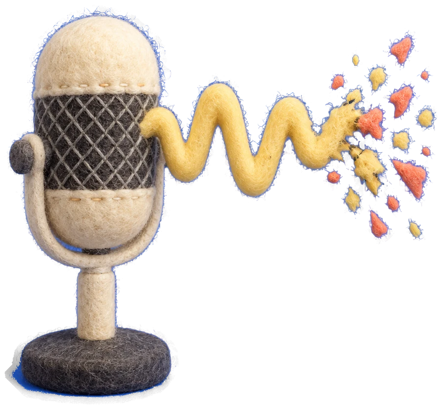

yuhobuilds / voice check
AI 목소리 깨짐 검사
파일만 넣으면 돼요
목소리 A
20.8% · 666Hz
미통과
목소리 B
0.0% · 403Hz
통과
synk.im/builds/voice-check
VOICE CHECK

깨짐
 yuhobuilds / voice checkyuhobuilds / voice check
yuhobuilds / voice checkyuhobuilds / voice check